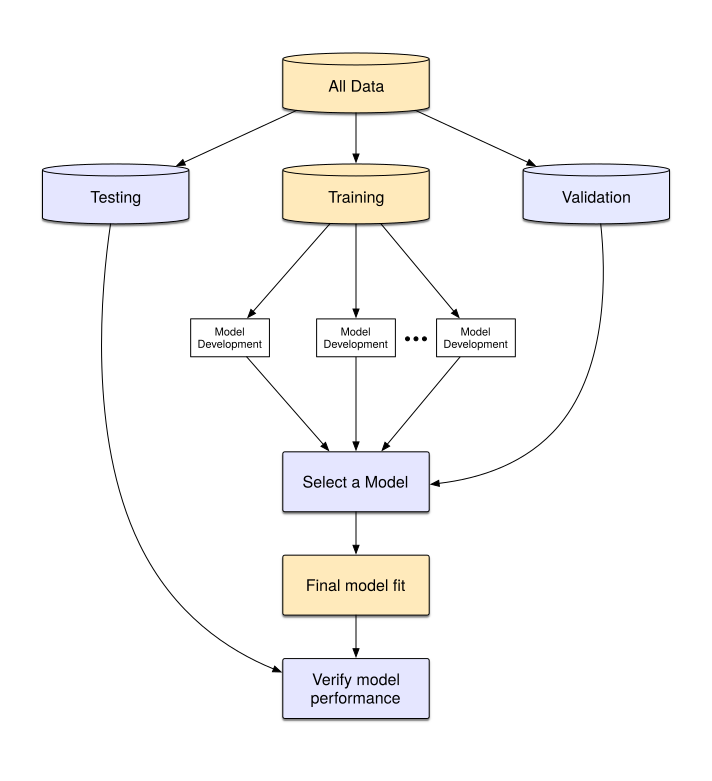
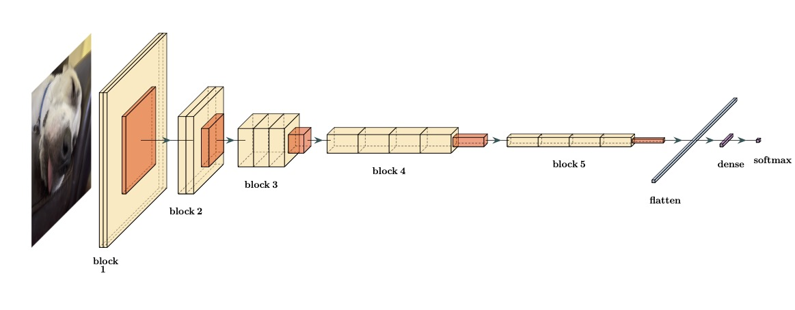
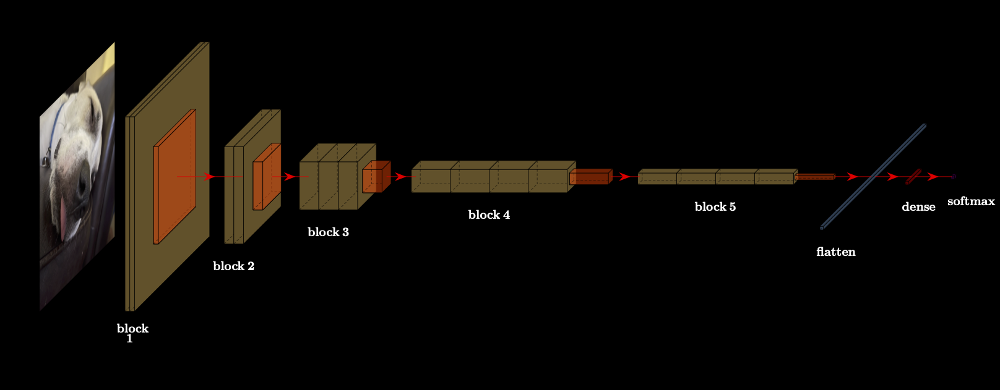

Machine learning (ML) models are mathematical equations that take inputs, called predictors, and try to estimate some future output value. The output, often called an outcome or target, can be numbers, categories, or other types of values.
For example, in the next chapter, we try to predict how long it takes to deliver food ordered from a restaurant. The outcome is the time from the initial order (in minutes). There are multiple predictors, including: the distance from the restaurant to the delivery location, the date/time of the order, and which items were included in the order. These data are tabular; they can be arranged in a table-like way (such as a spreadsheet or database table) where variables are arranged in columns and individual data points (i.e., instances of food orders) in rows, as shown in Table 1.21.
Note that the predictor values are almost always known. For future data, the outcome is not; it is a machine learning model’s job to predict unknown outcome values.
TODO: In Figure 1.1, we get a “(a)” between the image and the caption.
TODO The next figure, , is included images and another “(a)” and produces a warning in the terminal:


TODO We should think about about doing more than a warning when a traditional chunk is used in a book with renderings: [light, dark] and without fenced chunks.
Here’s an example that appears to work but when you switch to dark mode, the figure number changes.


TODO A few issues with Table 1.1 below:
gt_theme_dark() capitalizes columns ¯\(ツ)/¯| ID | Eccentricity | Area | Intensity | |||||
|---|---|---|---|---|---|---|---|---|
| Nucleus | Cell | Nucleus | Cell | Nucleus | Cell | |||
| 17 | 0.494 | 0.836 | 3,352 | 11,699 | 0.274 | 0.155 | ||
| 18 | 0.708 | 0.550 | 1,777 | 4,980 | 0.278 | 0.210 | ||
| 21 | 0.495 | 0.802 | 1,274 | 3,081 | 0.326 | 0.218 | ||
| 22 | 0.809 | 0.975 | 1,169 | 3,933 | 0.583 | 0.229 | ||
| ID | Eccentricity | Area | Intensity | |||||
|---|---|---|---|---|---|---|---|---|
| Nucleus | Cell | Nucleus | Cell | Nucleus | Cell | |||
| 17 | 0.494 | 0.836 | 3,352 | 11,699 | 0.274 | 0.155 | ||
| 18 | 0.708 | 0.550 | 1,777 | 4,980 | 0.278 | 0.210 | ||
| 21 | 0.495 | 0.802 | 1,274 | 3,081 | 0.326 | 0.218 | ||
| 22 | 0.809 | 0.975 | 1,169 | 3,933 | 0.583 | 0.229 | ||
I just put the next table to see if we get the reference number changing when you go between light/dark (it did not for me).
| Time to Delivery | Hour of Order | Day of Order | Distance | Item Counts | |||
|---|---|---|---|---|---|---|---|
| 1 | 2 | ... | 27 | ||||
| 15.26 | 11.9 | Thu | 2.82 | 0 | 0 | ... | 0 |
| 27.45 | 19.2 | Wed | 3.59 | 0 | 0 | ... | 1 |
| 25.50 | 14.9 | Thu | 2.28 | 2 | 0 | ... | 0 |
| 17.34 | 12.2 | Wed | 3.26 | 0 | 0 | ... | 0 |
| 13.58 | 11.5 | Fri | 2.15 | 2 | 0 | ... | 0 |
| 25.55 | 15.4 | Sat | 2.17 | 0 | 0 | ... | 0 |
| 19.86 | 13.2 | Tue | 2.67 | 0 | 0 | ... | 0 |
| 28.25 | 15.7 | Sun | 4.24 | 1 | 0 | ... | 1 |
| Time to Delivery | Hour of Order | Day of Order | Distance | Item Counts | |||
|---|---|---|---|---|---|---|---|
| 1 | 2 | ... | 27 | ||||
| 15.26 | 11.9 | Thu | 2.82 | 0 | 0 | ... | 0 |
| 27.45 | 19.2 | Wed | 3.59 | 0 | 0 | ... | 1 |
| 25.50 | 14.9 | Thu | 2.28 | 2 | 0 | ... | 0 |
| 17.34 | 12.2 | Wed | 3.26 | 0 | 0 | ... | 0 |
| 13.58 | 11.5 | Fri | 2.15 | 2 | 0 | ... | 0 |
| 25.55 | 15.4 | Sat | 2.17 | 0 | 0 | ... | 0 |
| 19.86 | 13.2 | Tue | 2.67 | 0 | 0 | ... | 0 |
| 28.25 | 15.7 | Sun | 4.24 | 1 | 0 | ... | 1 |
Non-tabular data are later in this chapter.↩︎